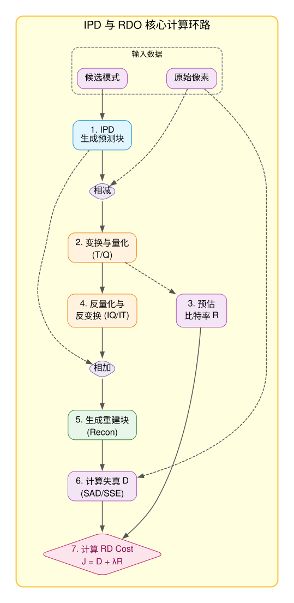

VideoEncoder_Project 帧内预测与模式决策机制总结
Intra Prediction Architecture & Hardware Bottlenecks
1. 帧内预测的高阶架构瓶颈与 C-Model 应对策略
针对业界 Intra Prediction 极其头疼的架构瓶颈，我们目前的 C-Model 进行了一系列的巧妙化解或规避。本章将详细解析这些痛点及我们的解决方案。
1.1 亮度 (Luma) 与色度 (Chroma) 的并行决策优化
在标准视频编码中，色度预测经常需要复用亮度的最佳预测方向（如 DM 模式/Chroma from Luma）。理论上，这意味着色度必须死等亮度算完才能开工。但在我们的 C-Model (以及对应的实际硬件) 中做了深度的并行优化：将色度的候选模式拆分为“独立模式”(如 Planar, DC, 水平, 垂直) 和“依赖模式”(DM)。独立模式会与 Luma 决策流完全并行计算 Cost，隐藏了大量延迟；只有 DM 模式需要短暂等待 Luma 输出 Best Mode 后再做计算和最终比对。
(Planar/DC/水平/垂直)"] --> ChromaCost{"并行计算 Chroma Cost"} end LumaCost --> LumaBest["决出 Best Luma Mode"] ChromaCost --> ChromaWait["独立模式结果缓存"] LumaBest --> Merge["最终候选比较
(独立模式 + DM模式)"] ChromaWait --> Merge Merge --> Final["确定 Best Chroma Mode"] style LumaCost fill:#e1f5fe,stroke:#0288d1 style ChromaCost fill:#e8f5e9,stroke:#2e7d32 style ChromaWait fill:#e8f5e9,stroke:#2e7d32
2. 传统帧内预测四大痛点解析与 C-Model 规避方案
2.1 痛点解析一：MPM 的强依赖流水线气泡
MPM 是一种利用空间相邻性来压缩模式编码比特数的算法。核心思想是：当前块的纹理方向极有可能与它左侧和上方的相邻块保持一致。因此，编码器会根据左块和上块的最终预测模式，推导出一个“最可能模式列表”。如果当前块最优模式在这个列表中，只需极少比特即可编码。
包含 3~6 个高优候选] style Top fill:#f5f5f5,stroke:#999 style Left fill:#f5f5f5,stroke:#999 style MPMGen fill:#e1f5fe,stroke:#0288d1 style MPMList fill:#fff3e0,stroke:#f57c00
- 强依赖卡点：必须死等左侧块和上方块的 RDO 全部结束，提取它们的最终模式 (Left Mode, Top Mode)。
- 判断与生成：
- 如果 左侧模式 == 上方模式：则 MPM 列表填入 [左侧模式, 平滑模式(Planar), 均值模式(DC)]。
- 如果 左侧模式 != 上方模式：则 MPM 列表填入 [左侧模式, 上方模式, 平滑模式(Planar)]。
- 返回结果：将生成的 MPM 列表提供给当前块的模式粗选 (MD) 和 RDO 模块使用。
在实际的一帧画面中，CU（编码单元）是按从左到右、从上到下顺序编码的（Z-Scan 顺序）。当编码到当前 CU 时，只有它的左侧块和上方块已经完成了真实的 RDO 重建，其模式是确定的。
数量扩散逻辑（C-Model 严格推导）：
如果 Left 和 Top 模式不相同（例如 Left 是水平纹理，Top 是垂直纹理），说明当前块处于纹理交界处。此时 MPM 列表不仅会直接收录 Left 和 Top，还会兜底塞入无方向的 平滑模式（Planar） 和 均值模式（DC）。
如果在 VVC 等高级标准中，为了提高命中率，算法甚至会在 Left 模式的角度上做微调（例如 Left-1度, Left+1度），从而将候选列表膨胀到 6 个。这就解释了为什么 2 个输入源能裂变出 3~6 个候选。
CU 模式 10
(水平)
CU
MPM 生成算法
(C-Model 严格推导)
硬件流水线瓶颈： 为了生成当前块的 MPM 列表，它必须死等左方和上方块彻底做完 RDO 并决出最终模式。在硬件上，这意味着相邻块之间存在强烈的模式层面的数据依赖，导致极长的等待时间和流水线气泡。
通过走读代码发现，C-Model 在这块采用了和 Inter HMVP 高度一致的**区域冻结思路**。例如代码中的
ims->rdc32.mpm[i] = mpm[i] 逻辑，直接按 CU32 粒度提取并锁定了一组共享的 MPM。整个 CU32 内的子块强行复用这组冻结的 MPM，从而**彻底斩断了子块间互相等待 Intra 模式的流水线气泡**，实现了前端极致并发。
2.2 痛点解析二：CCLM 引发的最长色度挂起 (C-Model 未引入)
CCLM 是一种利用亮度 (Luma) 像素来预测色度 (Chroma) 像素的算法。它假设亮度和色度在同一个块内存在线性关系 (Chroma = α × Luma + β)。编码器通过对相邻的亮度重建像素和色度重建像素进行下采样和线性拟合，计算出参数 α 和 β，然后直接代入当前块的亮度重建像素求出色度预测值。
Chroma = α×L + β"] LinearModel --> ChromaPred["生成: 色度预测块"] style LumaRecon fill:#f5f5f5,stroke:#999 style Neighbor fill:#f5f5f5,stroke:#999 style LinearModel fill:#e1f5fe,stroke:#0288d1 style ChromaPred fill:#fff3e0,stroke:#f57c00
- 模型求解：提取相邻块的亮度重建像素和色度重建像素，通过线性回归计算出跨分量比例系数 α (Alpha) 和偏移量 β (Beta)。
- 致命死锁：当前块的色度预测被强行挂起，必须死等当前块的亮度分支跑完一整圈 (预测 -> 变换 -> 量化 -> 反量化 -> 反变换 -> 重建) 拿到最终的“亮度重建像素”。
- 下采样适配：由于色度分辨率通常只有亮度的一半 (YUV420)，需要对刚拿到的亮度重建像素进行 2:1 下采样。
- 代入计算：执行线性方程
色度预测 = α × 亮度下采样像素 + β，输出最终的色度预测块。
硬件流水线瓶颈： VVC 的 CCLM (跨分量线性模型) 要求色度的预测像素直接通过公式从亮度的重建像素 (Recon) 算出来。色度必须等亮度走完 T/Q/IQ/IT 拿到真实 Recon 后才能开始 Pred，极其阻塞流水线。
由于我们目前的架构主体依然是沿袭 HEVC 体系（部分融入优质工具），C-Model 中**并未引入 CCLM 这一宽带与流水线杀手特性**。这使得亮度和色度依然可以在拿到模式后，分别独立地进行后续计算，从算法源头上避开了这条最长的色度阻塞路径。
2.3 痛点解析三：极小尺寸块的密集反馈噩梦 (ISP 已被 C-Model 舍弃)
ISP 允许将一个常规的亮度预测块 (如 8x8) 沿水平或垂直方向强制切分为多个子块 (如四个 8x2 或 2x8)。最致命的是，这些子块在 CU 内部必须进行首尾相接的串行预测和重建：前一个子块的重建像素，必须立刻作为下一个子块的参考像素。
- 切分准备：获取当前 CU 块外部的原始参考像素，并将当前块强制横向或纵向切分为 2 到 4 个极小的条带形子块 (如 8x2)。
- 首尾串行地狱：对每一个子块执行严格的顺序遍历：
- 第 N 个子块利用当前的参考像素进行预测，并立刻执行完整的 RDO 重建。
- 核心卡点：将第 N 个子块刚刚出炉的重建像素，立刻原地更新为第 N+1 个子块的边界参考像素。
- 循环结束：直至最后一个子块跑完重建，整个 CU 块的 ISP 流程才算走完。
硬件流水线瓶颈： 连续的一堆 4x4 小块会导致极高频的串行反馈；而 VVC 的 ISP (帧内子划分) 会在一个 CU 内部再切分且首尾串行依赖，导致流水线深度崩溃。
代码中明确标识了
//ISP not in，我们果断**舍弃了 ISP 这种导致强串行的算法**。对于标准的 4x4 块，我们的架构依靠强大的 MD 并发（原图粗选）掩盖了前期的搜索时间，并且 RDO 阶段只针对 Top-N（极少的候选数量）进行精确计算，将 4x4 带来的串行气泡时长压缩到了硬件可接受的极限。
2.4 痛点解析四：多参考行 (MRL) 引发的 SRAM 带宽剧增 (C-Model 已禁用)
传统的帧内预测只允许使用紧挨着当前块最外面的一行/一列相邻像素作为参考。而 MRL 算法打破了这个限制，允许预测器跳过第一行，去拾取外围第 2 行或第 3 行的重建像素进行方向投影预测，以此来捕捉更远距离的纹理趋势。
- 提取指令：接收编码器发出的 MRL 层级索引 (mrl_idx)，指示需要使用外围第几圈的参考像素。
- 带宽洪峰：跳过传统的第 1 行紧贴像素，通过多路复用器向片上 SRAM 发起跳跃式地址越界读取，强行拉取更远的第 2 行 或第 3 行的海量重建像素。
- 执行投影：利用取回的远端参考行像素，结合指定的角度模式 (Angle Mode) 执行传统的帧内方向性投影，生成预测块。
硬件流水线瓶颈： 常规 Intra 只取外圈 1 行 1 列像素，但 VVC 的 MRL 允许使用外圈 3 行内的重建像素，导致 SRAM 读带宽需求成倍暴增，且连线极其复杂。
基于 PPA（面积与功耗）的极致权衡，当前的 C-Model 并未开启或引入 MRL。SRAM 只需要老老实实地缓存紧贴着边界的一行一列像素。这保证了线管系统（Line Buffer）的极简设计和可预测的超低内存带宽。
3. MD（模式粗选）与 RDO（精细优化）的彻底解耦设计
这是硬件编码器实现极速并行计算的最核心架构优化。为了打破“当前 CU 预测必须等待前一个 CU 重建完毕”的空间串行死锁，硬件设计采用了**两阶段选拔制**。
4. 空间依赖瓶颈的突破与编解码一致性
5. IPD 与 RDO 的核心计算环路 (Calculation Loop)
在硬件视频编码器中，候选模式的精细评估并非一蹴而就，而是需要在一个紧密耦合的反馈环路中运行。这个环路由 IPD (Intra Prediction Datapath / 帧内预测数据通路) 与 RDO (Rate-Distortion Optimization / 率失真优化) 模块共同构成。
因为我们不能只看预测出来的像素好不好，我们还必须考虑“要把这些残差和模式信息写入码流，需要消耗多少比特 (Rate)”，以及“经过量化和反量化这种有损压缩后，最终用户看到的画面失真到底有多大 (Distortion)”。这就需要完整地模拟一遍编码和解码的过程。

- 预测生成 (IPD)：根据当前测试的 Intra 模式和周围已重建的参考像素，进行空间投影，生成当前块的预测像素 (Predictor)。
- 求残差与 T/Q：将原始像素减去预测像素得到残差，送入二维 DCT 变换矩阵 (T) 和量化器 (Q)，得到离散的量化系数。
- 分流评估：
- 分支一 (Rate)：量化系数送入熵编码器 (CABAC) 模型，预估消耗的比特数 R。
- 分支二 (Recon)：量化系数立刻进行反量化 (IQ) 和反变换 (IT)，将有损残差加回预测像素，得到真正解码端可见的“重建像素 (Recon)”。
- 失真计算：将“重建像素”与“原始像素”求差平方和 (SSE) 或绝对误差和 (SAD)，得到失真度 D。
- 最终决策：通过拉格朗日乘子公式
Cost = D + λ * R计算出该模式的最终代价。循环测试多个模式后，Cost 最小的胜出！
6. 超大块 (CU64) 与 MTT 架构的局部降维决策策略
在硬件实现中，为了极致压缩评估时间和计算功耗，对于超过最大硬件支持尺寸（如 32x32）的超大块或 MTT（多类型树）划分，我们采用了局部降维模式选拔 (Mode PK) 策略。其核心思想是：用最具代表性的局部区域的 PK 结果，来决定整个超大块的全局最佳预测模式。
- 对于完整的 64x64 CU： 仅提取其左上角的 32x32 亮度区域参与详尽的 Mode PK (代价计算评估)。该局部区域胜出的 Best Luma Pred Mode，将直接被采纳为整个 64x64 CU 的最佳亮度预测模式。
- 色度 (Chroma) 的对应降维： 在 4:2:0 采样下，64x64 亮度块对应 32x32 的色度块。由于硬件支持的最大色度 TU 变换核为 16x16，因此降维策略保持高度一致：仅对左上角的 16x16 色度区域进行 Mode PK，选出的最佳模式直接复用给该 CU 对应的其余三个 16x16 色度区域。
- 对于尺寸超限的 MTT 块 (含 BT 与 TT)： 选用靠近已重建参考像素一侧的局部区域。无论是二叉树 (BT) 产生的 64x32 / 32x64 块，还是三叉树 (TT) 产生的 64x16 / 16x64 侧边块，只要有一边超过 32，就沿着超限边截取靠左或靠上的 32 尺寸区域。具体来说，宽块截取左侧 32 长度，高块截取上方 32 长度进行 Mode PK。选出的模式直接应用于整个 MTT 块及其对应的色度子区域。